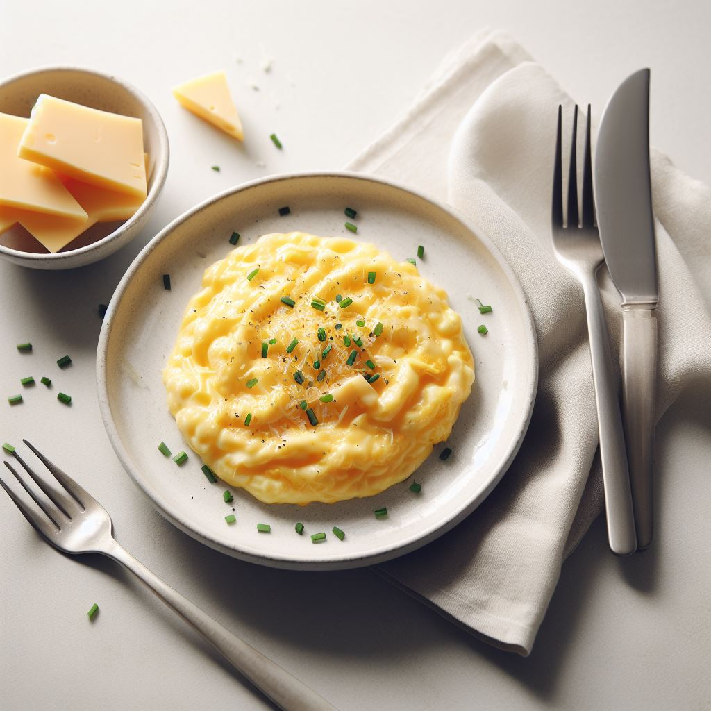

Scrambled Egg
Ingredients:
- 1 large egg
- 1 tablespoon of milk
- Salt and pepper to taste
- 1 teaspoon of butter
How to Cook:
- In a small bowl, whisk the egg and milk together until well combined. Season with salt and pepper.
- In a nonstick skillet over medium-high heat, melt the butter and swirl to coat the pan.
- Pour the egg mixture into the pan and let it cook for a few seconds, then use a spatula to gently push the cooked edges towards the center, creating soft folds.
- If you want to add any toppings, sprinkle them over the egg while it is still moist.
- Cook until the egg is set to your liking, then slide it onto a plate and enjoy!